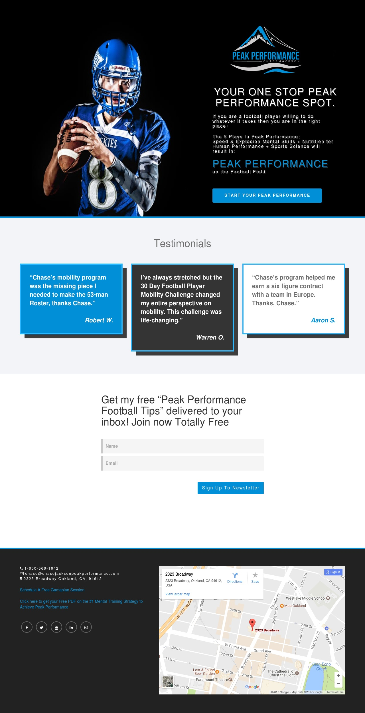
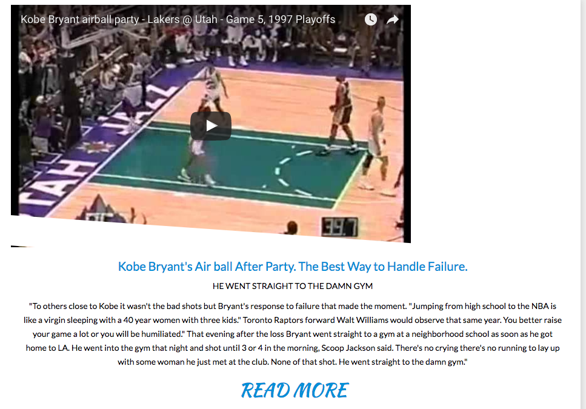
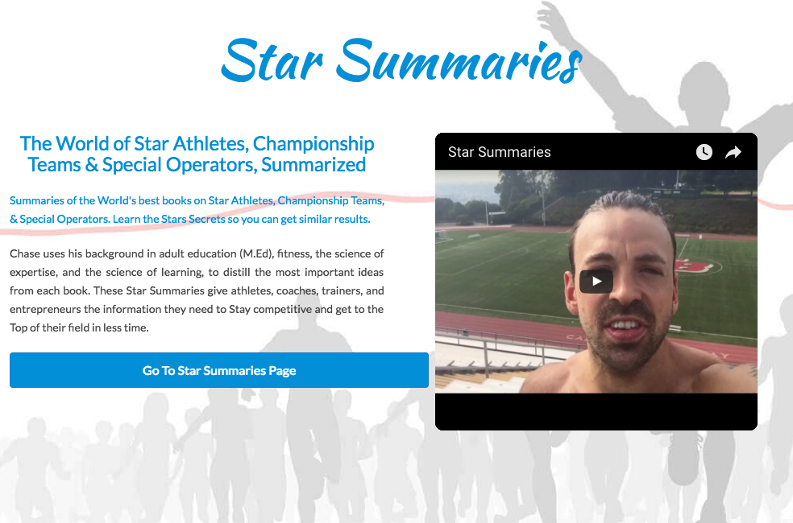
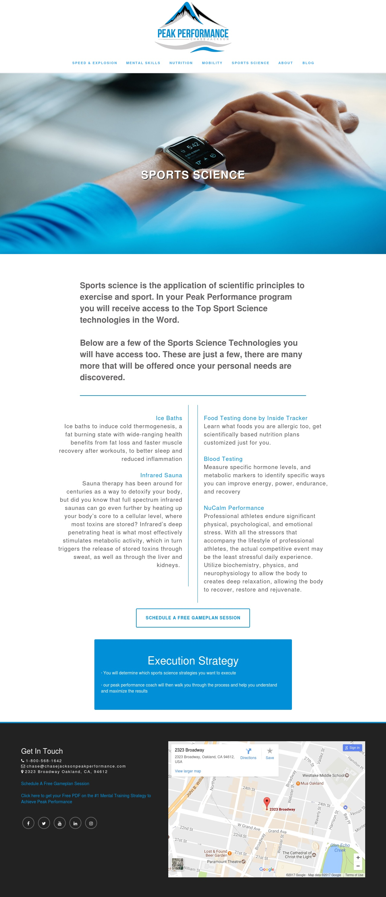

Desc. Personal website for a professional football trainer.
Role Front End Developer & Site Designer
Used HTML, CSS, PHP, WordPress, Bootstrap
chasejacksonpeakperformance.com
I helped Chase with his online presence. The old website was dated, and it needed a makeover. Chase gave me some ideas, I added mine, and a new site was created!
I'll start with the old version of the site, and show what I changed, and why I made those changes.
Old Header
Chase's company logo is large, but the old developers shrunk it to fit it in the nav bar. It doesn't look awful at all, but it's tough to make out some of the letters in the logo, in this case it was Chase's name. The main problem with the old header is the video. There was no reason at all for that to be included in the header. That shows up on every page. I have no clue why the previous developers did that, but removing it was the first thing I did.
Landing Page
I added a landing page to the site. The page gave users a brief outline on the services Chase is able to provide, testimonials, and an email newsletter sign up. 
Content Pages
The old pages can be seen below. The main content pages were in need of a new, modern design. The pages in the previous version weren't really visually appealing. The fonts, the background images, and the alignment needed to go.
 
My Content Pages
I made completely new pages detailing the services offered by the company. Since the logo for Chase Jackson Peak Performance was shaped like a box (image dimensions), the navigation took up some space. To accommodate this, the header went away when users scrolled down, and came back when they scrolled up. The new navigation bar can be seen on the screenshot of one of the new pages I created.

Blog
I also added a blog to the site. There was a blog page before, but it wasn't really a blog. The old developers basically asked for the blog content, and put it into a bootstrap modal. Users couldn't comments, but most importantly they couldn't be edited or deleted by the owner of the site unless he had web dev knowledge.
I developed a new blog section using WordPress. Now Chase can edit blogs posts, create new ones, and have his site members comment on the articles he writes.